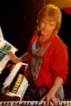

Main Members of The Kinks
Members of The Kinks
Ray Davies

Raymond Douglas Davies was born on 21st June, 1944 and has been part of The Kinks since 1963. He was the lead singer, chief songwriter, and rhythm guitarist in The Kinks. He later went on to publish his semi-fictional 1995 memoir, X-Ray and a second memoir, Americana, in 2013.
Dave Davies
David Russell Gordon Davies was born on 3rd February, 1947 and founded The Kinks in 1963 with Pete Quaife. He was the lead guitarist, backing and occasional lead singer. Davies was solely responsible for the signature distorted power chord sound on the Kinks' first hit, "You Really Got Me".
Pete Quaife

Mick Avory
Michael Charles Avory born 15th February, 1944 and is best known as the longtime drummer and percussionist for The Kinks which he was a member of from 1964-1984.
Ian Gibbons
Ian Gibbons was born on 18th July, 1952 and he was the keyboardist for The Kinks from 1979-1989. In 2008 he joined The Kast Off Kinks, a line-up which includes some past members from The Kinks - Mick Avory, Jim Rodford, John Dalton and John Gosling.
Jim Rodford
Bob Henrit
Robert John "Bob" Henrit was born 2nd May, 1944 and is an English drummer who has been a member of several musical groups. Henrit replaced the long-serving drummer Mick Avory in 1984 after he left and remained a member of The Kinks until they disbanded in 1996.
John Dalton

John Dalton was born on 21st May, 1943 and is a British bass guitar player. He was best known as a member of The Kinks from 1969 to 1976, replacing original member Pete Quaife and joined again briefly in 1978.
John Gosling

John Gosling was born on 6th February, 1948 and was the keyboardist for The Kinks from 1970 to 1978, making the band an official five-piece during this time. In the 1990s, John became a founding member of the Kast Off Kinks until retiring in 2008.
Brief Members
Mark Haley

Mark Haley was born in Portsmouth, England into a musical family and learnt classical piano at the age of 5. He was a member of The Kinks between 1989 and 1993 as their keyboardist. He later played for the Rubettes on keyboards, guitars, vocals from 2000 to 2015.
Andy Pyle

Andy Pyle was born in 1946 in Luton, England. He is an English bass guitarist and played with the Kinks from 1976–1978. He later played with another band called Wishbone Ash from 1986–87 and 1991–93.
Gordon Edwards